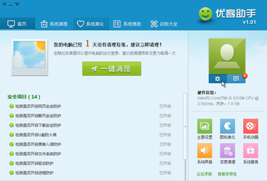

<div class="header"><h1 class="slidetitle">優客助手</h1></div>

<div class="main">

<div class="text">

<div>
<p>專爲Ubuntu Kylin用戶打造的系統級管理與配置工具，具備強大的系統信息展示、壹鍵垃圾清理、系統定制美化等功能，讓您的桌面更加流暢、易用而富有個性！</p>
</div>

<div class="featured">
<h2 class="subtitle">包含軟件</h2>
<ul>
	<li>
	
	<p class="caption">youker-assistant</p>
	</li>
</ul>
</div>

</div>



</div>
